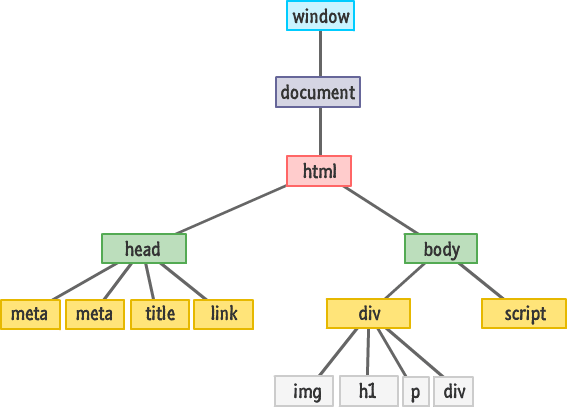
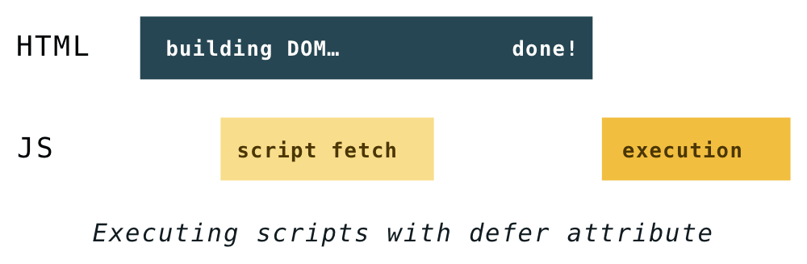
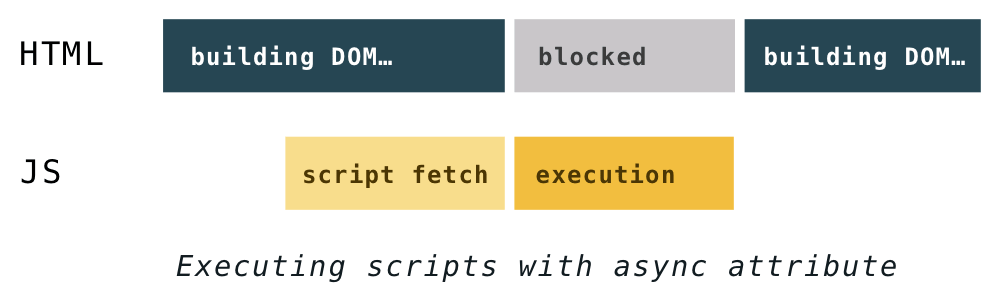

Об'єктна модель документа
Коли ми працюємо з браузером, доступний функціонал складається з декількох модулів, оскільки JavaScript не має інструментів для роботи з браузером.

Об'єктна модель документа (Document Object Model) - незалежний від мови інтерфейс для роботи з HTML-документом. Містить набір властивостей і методів, що дозволяють шукати, створювати і видаляти елементи, реагувати на дії користувача і багато іншого. Тобто з'єднує сторінку з мовою програмування.
DOM - це відображення HTML-документа, деревоподібна структура, в якій кожен вузол - це JavaScript-об'єкт з властивостями і методами, що становить частину HTML-документа. Кожен елемент в документі, весь документ в цілому, заголовок, посилання, абзац - це частини DOM цього документа, тому всі вони можуть бути змінені з JavaScript-коду.
DOM - це відображення HTML-документа, деревоподібна структура, в якій кожен вузол - це JavaScript-об'єкт з властивостями і методами, що становить частину HTML-документа. Кожен елемент в документі, весь документ в цілому, заголовок, посилання, абзац - це частини DOM цього документа, тому всі вони можуть бути змінені з JavaScript-коду.
HTML-документ і DOM
Згідно з DOM-моделлю, кожен тег утворює окремий елемент-вузол, кожен фрагмент тексту - текстовий елемент. HTML-документ - це ієрархічне дерево, в якому у кожного елемента (крім кореневого) є тільки один батьківський елемент, тобто елемент, всередині якого він розташовується. Це дерево утворюється за рахунок вкладеної структури тегів і текстових елементів.
Щоб відобразити HTML-документ, браузер спочатку перетворює його у формат, який він розуміє - DOM. Рушій браузера має спеціальний фрагмент коду - HTML-парсер, який використовується для перетворення HTML в DOM.
В HTML вкладеність визначає відносини батько-дитина між елементами. В DOM об'єкти пов'язані у деревоподібній структурі даних, фіксуючи ці відносини. Браузер будує DOM поступово, щойно надходять перші фрагменти коду, він починає парсити HTML, додаючи вузли у деревоподібну структуру.
Після того, як DOM-дерево побудовано, у ньому можна знайти елемент за допомогою JavaScript і виконувати з ним певні дії, оскільки кожен елемент має інтерфейс з безліччю властивостей і методів.

DOM-дерево
Візуалізуємо дерево HTML-документа, використовуючи сервіс генератора DOM-дерева
<!DOCTYPE html>
<html>
<head>
<title>Document title</title>
</head>
<body>
<h1>Page title</h1>
<ul>
<li><a href="#">Link 1</a></li>
<li><a href="#">Link 2</a></li>
</ul>
</body>
</html>
У цьому дереві виділені два типи вузлів.
- Вузли-елементи (element node) - утворюються тегами, звичайним чином одні елементи вкладені в інші. Структура дерева утворена виключно за рахунок них.
- Текстові вузли (text node) - утворюються текстом всередині елементів. Текстовий вузол містить тільки рядок тексту і не може мати дочірніх елементів, тобто він завжди на найнижчому рівні ієрархії. Пробіли і перенесення рядків - це теж текстові вузли.
ЦІКАВО З цього правила є винятки: пробіли до head ігноруються, а будь-який вміст після body не створює елемент, браузер переносить його в кінець 'body'.
Навігація по DOM
DOM надає широкий спектр можливостей для роботи з елементом і його вмістом, але для цього, спочатку потрібно отримати посилання на нього. Доступ до DOM починається з об'єкта document , з нього можна дістатися до будь-яких елементів.
ЦІКАВО: document - це частина глобального об'єкта window, який доступний у скрипті, коли він виконується в браузері. Так само як alert, console.log, prompt і багато інших.
Елементи DOM-дерева мають ієрархічне відношення один до іншого. Для опису відносин використовуються терміни предок (ancestor), нащадок (descendant), батько (parent), дитина (child) і сусід (sibling).
- Найвищий елемент називається кореневим (root node).
- Кожен елемент, крім кореневого, має тільки одного батьківського.
- У елемента може бути скільки завгодно дітей.
- Сусіди - це елементи зі спільним батьківським елементом.
- Дочірні елементи (діти) - елементи, які знаходяться безпосередньо всередині поточного (перша вкладеність).
- Нащадки - усі елементи, які знаходяться у поточному, разом з їхніми дітьми, дітьми їхніх дітей тощо. Тобто все на зразок дерева.
Для навігації по цій ієрархії елементи мають наступні властивості.
- elem.parentNode - вибере батьківський elem.
- elem.childNodes - псевдомасив, зберігає всі дочірні елементи, включно з текстовими.
- elem.children - псевдомасив, зберігає тільки дочірні вузли-елементи, тобто ті, що відповідають тегам.
- elem.firstChild - вибере перший дочірній елемент всередині elem, включно з текстовими вузлами.
- elem.firstElementChild - вибере перший дочірній вузол-елемент всередині elem.
- elem.lastChild - вибере останній дочірній елемент всередині elem, включно з текстовими вузлами.
- elem.lastElementChild - вибере останній дочірній вузол-елемент всередині elem.
- elem.previousSibling - вибере елемент «зліва» від elem (його попереднього сусіда).
- elem.previousElementSibling - вибере вузол-елемент «зліва» від elem (його попереднього сусіда).
- elem.nextSibling - вибере елемент «праворуч» від elem (його наступного сусіда)
- elem.nextElementSibling - вибере вузол-елемент «праворуч» від elem (його наступного сусіда).
Відкрий цей приклад в окремому вікні і подивися логи в консолі розробника.
See the Pen lesson-11-dom-traversal by goit-academy (@goit-academy) on CodePen.
ЦІКАВО: DOM-колекції, як-от childNodes і children - псевдомасиви (NodeList), у них немає більшості методів масиву.
Пошук елементів
Отже, ми вже знаємо що DOM-елемент - це об'єкт з властивостями і методами. Саме час навчитися швидко знаходити елемент за довільним CSS-селектором. Група методів elem.querySelector* - це сучасний стандарт для пошуку елементів. Вони дозволяють знайти елемент або групу елементів за CSS-селектором будь-якої складності.
element.querySelector(selector);
Використовується, якщо необхідно знайти тільки один, найчастіше унікальний елемент.
- Повертає перший знайдений елемент всередині element, що відповідає CSS-селектору selector.
- Якщо нічого не знайдено, поверне null.
element.querySelectorAll(selector);
Використовується, якщо необхідно знайти колекцію елементів, тобто отримати масив посилань на елементи з однаковим селектором. Наприклад, всі елементи списку з класом menu-item.
- Повертає псевдомасив всіх елементів всередині element, які відповідають CSS-селектору selector.
- Якщо нічого не знайдено, поверне порожній масив.
See the Pen lesson-11-querySelector* by goit-academy (@goit-academy) on CodePen.
Властивості та атрибути
Під час побудови DOM-дерева, деякі стандартні HTML-атрибути стають властивостями елементів. Подивимося на декілька властивостей, які часто використовуються.
- value - містить поточний текстовий контент елементів форм.
- checked - зберігає стан чекбокса або радіокнопки.
- name - зберігає значення, вказане в HTML-атрибуті name.
- src - шлях до зображення тегу
.
See the Pen lesson-11-properties by goit-academy (@goit-academy) on CodePen.
Властивість textContent
elem.textContent повертає текстовий контент всередині елемента. Доступний для читання і запису. Неважливо, що буде передано в textContent, дані завжди будуть записані як текст.
See the Pen lesson-11-textContent by goit-academy (@goit-academy) on CodePen.
Властивість classList
У властивості classList зберігається об'єкт з методами для роботи з класами елемента.
- elem.classList.contains(cls) - повертає true або false, залежно від наявності класу cls в елемента.
- elem.classList.add(cls) - додає клас cls до списку класів елемента.
- elem.classList.remove(cls) - видаляє клас cls зі списку класів елемента.
- elem.classList.toggle(cls) - якщо відсутній клас cls, то додає його, якщо - присутній, навпаки - видаляє.
- elem.classList.replace(oldClass, newClass) - замінює існуючий клас oldClass на вказаний newClass.
See the Pen lesson-11-classList by goit-academy (@goit-academy) on CodePen.
Властивість style
Використовується для читання та зміни інлайнових стилів. Повертає об'єкт CSSStyleDeclaration, який містить список усіх властивостей, визначених тільки у вбудованих стилях елемента, а не увесь CSS. Під час запису властивості записуються в camelCase, тобто background-color перетворюється на element.style.backgroundColor тощо.
const button = document.querySelector(".btn");
button.style.backgroundColor = "teal";
button.style.fontSize = "24px";
button.style.textAlign = "center";
console.log(button.style); // inline styles object
ЦІКАВО: На практиці стилізація елементів виконується шляхом додавання CSS-класів. Властивість style використовується для додавання будь-яких динамічних стилів, наприклад, під час анімації.
Атрибути
DOM-елементам відповідають HTML-теги, які містять текстові атрибути. Доступ до атрибутів здійснюється за допомогою стандартних методів. Ці методи працюють зі значенням, яке знаходиться в HTML.
- elem.hasAttribute(name) - перевіряє наявність атрибута, повертає true або false.
- elem.getAttribute(name) - отримує значення атрибута і повертає його.
- elem.setAttribute(name, value) - встановлює атрибут.
- elem.removeAttribute(name) - видаляє атрибут.
- elem.attributes - властивість, що повертає об'єкт усіх атрибутів елемента.
See the Pen lesson-11-attributes by goit-academy (@goit-academy) on CodePen.
data-атрибути
Дозволяють додати до тегу довільний атрибут і отримати його значення в JavaScript. Цю можливість використовують для того, щоб спростити написання коду, наприклад, зв'язати дані і розмітку за унікальним ідентифікатором, вказати тип дії кнопки тощо.
<button type="button" data-action="save">Save</button>
<button type="button" data-action="close">Close</button>
Для отримання значення data-атрибута використовується властивість dataset, після якого стоїть ім'я атрибута. Тобто data- відкидається, а інша частина імені записується як ім'я властивості об'єкта.
const saveBtn = document.querySelector('button[data-action="save"]');
console.log(saveBtn.dataset.action); // "save"
const closeBtn = document.querySelector('button[data-action="close"]');
console.log(closeBtn.dataset.action); // "close"
See the Pen lesson-11-data-attributes by goit-academy (@goit-academy) on CodePen.
Створення та видалення елементів
DOM API дозволяє не тільки вибирати або змінювати вже існуючі, але й видаляти, а також створювати нові елементи, після чого додавати їх в документ.
Створення
document.createElement(tagName);
Створює елемент з ім'ям tagName і повертає посилання на нього як результат свого виконання. tagName - це рядок, що вказує тип елемента, який створюється. Елемент створюється в пам'яті, в DOM його ще немає.
const heading = document.createElement("h1");
console.log(heading); // <h1></h1>
heading.textContent = "This is a heading";
console.log(heading); // <h1>This is a heading</h1>
const image = document.createElement("img");
image.src = "https://placeimg.com/640/480/nature";
image.alt = "Nature";
console.log(image); // <img src="https://placeimg.com/640/480/nature" alt="Nature" />
Додавання
Щоб створений елемент відображався на сторінці, його необхідно додати до вже існуючого елемента в DOM-дереві. Припустимо, що додаємо до певного елемента element, для цього існують методи.
- element.append(el1, el2, ...) - додає один або декілька елементів після всіх дітей елемента element.
- element.prepend(el1, el2, ...) - додає один або декілька елементів перед усіма дітьми елемента element.
- element.after(el1, el2, ...) - додає один або декілька елементів після елемента element.
- element.before(el1, el2, ...) - додає один або декілька елементів перед елементом element.
У всіх цих методах el - це елементи або рядки, в будь-якому поєднанні і кількості. Рядки додаються як текстові вузли.
See the Pen lesson-11-inserting-elements by goit-academy (@goit-academy) on CodePen.
ЦІКАВО: Якщо елемент для додавання вже знаходиться в DOM, то він видаляється зі свого старого місця і додається у нове. З цього випливає правило - один і той самий елемент не може бути одночасно у двох місцях.
Видалення
elem.remove();
Для того, щоб видалити елемент, використовується метод remove(). Він викликається на елементі elem, який необхідно видалити.
See the Pen lesson-11-remove by goit-academy (@goit-academy) on CodePen.
Оптимізація роботи з DOM
Сучасні браузери намагаються оптимізувати процес відтворення сторінки без втручання розробника. Проте, зміна DOM-дерева - це дорога операція, тому необхідно намагатися мінімізувати кількість звернень до DOM.
Repaint - відбувається, коли зміни торкнулися стилів, що впливають на зовнішній вигляд елемента, але не на геометрію. Наприклад opacity, background-color, visibility і outline. Браузер повторно створює елемент, з урахуванням нового стилю. Також перевіряється видимість інших елементів, один або більше можуть виявитися прихованими під елементом, що змінив зовнішній вигляд.
Reflow - відбувається, коли зміни впливають на вміст, структуру документу, положення елементів. Відбувається перерахунок позиціонування і розмірів, що призводить до повторного створення частини або всього документу. Зміна розміру одного батьківського контейнера вплине на всіх його дітей і предків. Має значно більший вплив на продуктивність, ніж repaint.
Усі перераховані вище операції блокують браузер. Сторінка не може виконувати жодні інші операції у той час, коли відбувається reflow або repaint.
Причинами можуть бути:
- Маніпуляції з DOM (додавання, видалення, зміна, перестановка елементів)
- Зміна вмісту, зокрема тексту в полях форм
- Розрахунок або зміна CSS-властивостей
- Додавання і видалення таблиць стилів
- Маніпуляції з атрибутом class
- Маніпуляції з вікном браузера (зміни розмірів, прокручування)
- Активація псевдокласів (наприклад, ':hover')
Властивість innerHTML
Ще один спосіб створити DOM-елементи і помістити їх в дерево - це використовувати рядки з тегами і дозволити браузеру зробити всю важку роботу. У такого підходу є свої плюси і мінуси.
Читання
Властивість innerHTML зберігає вміст елемента, включно з тегами, у вигляді рядка. Значення, що повертається, - це завжди валідний HTML-код.
See the Pen lesson-11-innerhtml-read by goit-academy (@goit-academy) on CodePen.
Зміна
Властивість innerHTML доступна і для читання, і для запису. Якщо записати в неї рядок з HTML-тегами, то браузер під час парсингу рядка перетворить їх у валідні елементи і додасть в DOM-дерево.
See the Pen lesson-11-innerhtml-write by goit-academy (@goit-academy) on CodePen.
ЦІКАВО: Якщо у властивість innerHTML записати порожній рядок, то вміст елемента буде очищено. Це простий і швидкий спосіб видалення всього вмісту.
За такого підходу, на відміну від document.createElement(), ми не отримуємо посилання на створений DOM-елемент. Це перший крок на шляху до шаблонізації - створення великої кількості однотипної розмітки з різними даними за наперед визначеним шаблоном. Наприклад, як у списку товарів інтернет магазину тощо.
Однотипна (шаблонна) розмітка створюється із масиву даних. Прийом полягає у перебиранні цього масиву і складанні одного рядка з HTML-тегами, який потім записуємо в innerHTML елемента.
See the Pen lesson-11-innerhtml-multiinsert by goit-academy (@goit-academy) on CodePen.
Додавання
Зміна elem.innerHTML повністю видалить і повторно створить всі нащадки елемента elem. Якщо елемент спочатку не був порожній, то виникнуть додаткові витрати на серіалізацію вже існуючої розмітки, а це погано.
See the Pen lesson-11-innerhtml-update by goit-academy (@goit-academy) on CodePen.
ЦІКАВО: Використовуйте властивість elem.innerHTML для додавання тільки тоді, коли елемент elem - порожній, або якщо потрібно повністю замінити його вміст.
Метод insertAdjacentHTML()
Сучасний метод для додавання рядка з HTML-тегами перед, після або всередину елемента. Вирішує проблему innerHTML з повторною серіалізацією вмісту елемента під час додавання розмітки до вже існуючої.
elem.insertAdjacentHTML(position, string);
Аргумент position - це рядок, позиція щодо елемента elem. Приймає одне з чотирьох значень.
- "beforebegin" - перед elem
- "afterbegin" - всередині elem, перед усіма дітьми
- "beforeend" - всередині elem, після усіх дітей
- "afterend" - після elem
See the Pen lesson-11-insert-adjacent-html by goit-academy (@goit-academy) on CodePen.
ЦІКАВО: "beforebegin" і "afterend" працюють тільки тоді, коли elem вже знаходиться в DOM-дереві.
Підключення скриптів
Завантаження і виконання скрипта, зазначеного в тезі <script> без будь-яких атрибутів, блокують обробку HTML-документа і побудову DOM. Це проблема.
<script src="path-to-script.js"></script>
Коли аналізатор зустрічає такий тег, обробка HTML-документа припиняється і починається завантаження файлу скрипта, зазначеного в атрибуті src. Після завантаження скрипт виконується, і тільки потім відновлюється обробка HTML. Це називається «блокуючий» скрипт.
Атрибути defer та async були введені, щоб дати розробникам можливість краще контролювати спосіб завантаження скриптів, і коли саме їх виконувати.
Атрибут defer
<script defer src="path-to-script.js"></script>
Атрибут defer вказує браузеру завантажувати файл скрипта у фоновому режимі, паралельно обробці HTML-документа і побудові DOM. Скрипт буде виконаний тільки після того, як HTML-документ був оброблений, а DOM побудований. Такі скрипти не блокують побудову DOM-дерева і гарантовано виконуються у тому порядку, в якому вказані в HTML-документі.
Атрибут async
<script async src="path-to-script.js"></script>
Завантаження скрипта з атрибутом async не блокує побудову DOM, але він виконується відразу після завантаження. Це означає, що такі скрипти можуть заблокувати побудову DOM, і виконуються у довільному порядку.
Події
Подія - це сигнал від браузера про те, що на веб-сторінці щось відбулося. Події використовуються для реакції на дії користувача і виконання коду, пов'язаного з певною подією. Існує багато видів подій: миші, клавіатури, елементів форм, завантаження зображень, буфера обміну, зміни стадії CSS анімації або переходу, зміни розмірів вікна та багато інших.
Одна дія може викликати декілька подій. Наприклад, клік викликає спочатку mousedown, а потім mouseup і click. У тих випадках, коли одна дія генерує декілька подій, їхній порядок фіксований. Тобто обробники викликаються у порядку mousedown → mouseup → click.
Для того, щоб елемент реагував на дії користувача, до нього необхідно додати слухача (обробника) події. Тобто функцію, яка буде викликана, щойно подія відбулася.
Метод addEventListener()
Додає слухача події на елемент.
element.addEventListener(event, handler, options);
- event - ім'я події, рядок, наприклад "click".
- handler - колбек-функція, яка буде викликана під час настання події.
- options - необов'язковий об'єкт параметрів з розширеними налаштуваннями.
const button = document.querySelector(".my-button");
button.addEventListener("click", () => {
console.log("Button was clicked");
});
Для колбека можна (і бажано) використовувати окрему функцію і передавати на неї посилання. Іменована функція підвищує читабельність коду.
const button = document.querySelector(".my-button");
const handleClick = () => {
console.log("Button was clicked");
};
button.addEventListener("click", handleClick);
На одному елементі може бути будь-яка кількість обробників подій, навіть подій одного типу. Колбек-функції будуть викликатися у порядку їх реєстрації в коді.
See the Pen lesson-12-add-event-listener by goit-academy (@goit-academy) on CodePen.
Метод removeEventListener()
Видаляє слухача події з елемента. Аргументи аналогічні методу addEventListener().
element.removeEventListener(event, handler, options);
Для видалення потрібно передати посилання саме на ту колбек-функцію, яка була призначена в addEventListener(). У такому разі, для колбеків використовують окрему функцію і передають її за ім'ям (посиланням).
See the Pen lesson-12-remove-event-listener by goit-academy (@goit-academy) on CodePen.
Ключове слово this
Якщо колбеком буде функція, яка використовує this, за замовчуванням контекст всередині неї буде посилатися на DOM-елемент, на якому висить слухач.
const mango = {
username: "Mango",
showUsername() {
console.log(this);
console.log(`My username is: ${this.username}`);
},
};
const btn = document.querySelector(".js-btn");
// ✅ Працює
mango.showUsername();
// ❌ this буде посилатися на button, якщо використовувати showUsername як callback
btn.addEventListener("click", mango.showUsername); // не працює
// ✅ Не забувайте прив'язувати контекст методів об'єкта
btn.addEventListener("click", mango.showUsername.bind(mango));
Об'єкт події
Щоб обробити подію - недостатньо знати про те, що це клік або натискання клавіші, можуть знадобитися деталі. Наприклад, поточне значення текстового поля, елемент, на якому відбулася подія, вбудовані методи та інші.
Кожна подія - це об'єкт, який містить інформацію про деталі події та автоматично передається першим аргументом в обробник події. Всі події відбуваються з базового класу Event.
const handleClick = event => {
console.log(event);
};
button.addEventListener("click", handleClick);
Параметр event - це і є об'єкт події, який автоматично передається першим аргументом під час виклику колбек-функції. Ми можемо називати його як завгодно, але, як правило, його оголошують як e, evt або event.
Деякі властивості об'єкта події:
- event.type - тип події.
- event.currentTarget - елемент, на якому виконується обробник події.
See the Pen lesson-12-event-object by goit-academy (@goit-academy) on CodePen.
Дії браузера за замовчуванням
Деякі події викликають дію браузера, вбудовану за замовчуванням як реакція на певний тип події. Наприклад, клік на посиланні ініціює перехід на нову адресу, зазначену в href, а відправлення форми перезавантажує сторінку. Найчастіше ця поведінка небажана і її необхідно скасувати.
Для скасування дії браузера за замовчуванням в об'єкта події є стандартний метод preventDefault().
See the Pen lesson-12-prevent-default by goit-academy (@goit-academy) on CodePen.
Події клавіатури
Існує дві основні події клавіатури: keydown і keyup. На відміну від інших, події клавіатури обробляються на документі, а не на конкретному елементі. Об'єкти подій клавіатури походять від базового класу KeyboardEvent.
document.addEventListener("keydown", event => {
console.log("Keydown: ", event);
});
document.addEventListener("keyup", event => {
console.log("Keyup: ", event);
});
Натискаючи клавішу, спочатку відбувається keydown, після чого - keyup, коли клавішу відпустили. На практиці переважно обробляють тільки подію keydown, оскільки вона відбувається швидше за keyup, і користувач раніше бачить результат натискання. Події keydown і keyup спрацьовують при натисканні будь-якої клавіші, включно зі службовими (Ctrl, Shift, Alt, Escape тощо).
ЦІКАВО: Раніше була ще одна подія клавіатури - keypress. Більшість постів на форумах і блогах все ще можуть її використовувати, але будьте обережні - вона застаріла і підтримка у нових браузерах може припинитися в будь-який момент.
Властивості key і code
Властивість key повертає символ, згенерований натисканням клавіші, враховуючи стан клавіш-модифікаторів, наприклад, Shift, а також поточну мову. Властивість code повертає код фізичної клавіші на клавіатурі і не залежить від мови.
document.addEventListener("keydown", event => {
console.log("key: ", event.key);
console.log("code: ", event.code);
});
Наведіть фокус у вікно прикладу, клікнувши по ньому мишкою, відстеження подій клавіатури знаходиться на елементі document. Надрукуйте щось на клавіатурі і подивіться результат.
See the Pen lesson-12-keyboard-events by goit-academy (@goit-academy) on CodePen.
Клавіші-модифікатори
Для обробки комбінації клавіш, наприклад Ctrl + s або будь-якої іншої, на об'єкті події є властивості ctrlKey, altKey, shiftkey і metaKey, що зберігають булеве значення, яке сигналізує про те, чи була затиснута клавіша-модифікатор.
document.addEventListener("keydown", event => {
event.preventDefault();
if ((event.ctrlKey || event.metaKey) && event.code === "KeyS") {
console.log("«Ctrl + s» or «Command + s» combo");
}
});
Деякі комбінації клавіш можуть конфліктувати з поведінкою браузера за замовчуванням. Наприклад, Ctrl + d або Command + d робить закладку. Потрібно намагатися проектувати систему комбінацій сторінки таким чином, щоб вона не перетиналася із вбудованою у браузері. Але, у крайньому разі, поведінку за замовчуванням можна скасувати, викликавши метод event.preventDefault().
ЦІКАВО: Не так давно, замість властивостей key і code, використовували властивість keyCode. Більшість постів на форумах і блогах все ще можуть використовувати її, але будьте обережні - вона застаріла, не використовуйте властивість keyCode.
Події елементів форм
Подія submit
Відправлення форми відбувається під час кліку по кнопці з атрибутом type="submit" або натискання клавіші Enter, перебуваючи в будь-якому її текстовому полі. Подію submit можна застосувати для валідації (перевірки) форми перед відправленням, оскільки на об'єкті події існує багато корисних властивостей, пов'язаних з елементами форми. Сабміт форми перезавантажує сторінку, тому не забувайте скасовувати дію за замовчуванням методом preventDefault().
See the Pen lesson-12-form-submit by goit-academy (@goit-academy) on CodePen.
ЦІКАВО: Властивість elements DOM-елемента форми містить об'єкт з посиланнями на усі її елементи, які мають атрибут name. Тому в прикладі ми отримуємо значення полів, звертаючись до login.value і password.value.
Подія change
Відбувається після зміни елемента форми. Для текстових полів або textarea подія відбудеться не на кожному введенні символу, а після втрати фокусу, що не завжди зручно. Наприклад, доки ви набираєте щось у текстовому полі - подія відсутня, але як тільки фокус пропав, відбудеться подія change. Для інших елементів, наприклад, select, чекбоксів і радіо-кнопок, подія change спрацьовує відразу під час вибору значення.
See the Pen lesson-12-change-event by goit-academy (@goit-academy) on CodePen.
ЦІКАВО: Зверніть увагу на корисні властивості при роботі з елементом <select> в прикладі. Розберіться, що зберігається у властивостях value, selectedIndex і options.
Подія input
Відбувається тільки на текстових полях і textarea, і створюється щоразу при зміні значення елемента, не чекаючи втрати фокусу. На практиці input - це найголовніша подія для роботи з текстовими полями форми.
See the Pen lesson-12-input-event by goit-academy (@goit-academy) on CodePen.
Подія focus і blur
Елемент отримує фокус під час кліку миші або переходу клавішею Tab. Момент отримання і втрати фокусу - дуже важливий, отримуючи фокус, ми можемо завантажити дані для автозаповнення, почати відстежувати зміни тощо. Під час втрати фокусу - перевірити введені дані.
Під час фокусування елемента відбувається подія focus, а коли фокус зникає, наприклад, користувач клікає в іншому місці екрана, відбувається подія blur. Активувати або скасувати фокус можна програмно, викликавши в коді для елемента однойменні методи focus() і blur().
See the Pen lesson-12-focus-events by goit-academy (@goit-academy) on CodePen.
Фокус може бути тільки на одному елементі сторінки за одиницю часу, і поточний елемент, на якому знаходиться фокус, доступний як document.activeElement.
ЦІКАВО: Багато елементів не можуть отримати фокус. Наприклад, якщо клікнути по <div>, то фокусування на ньому не відбудеться, тому що це не інтерактивний елемент.